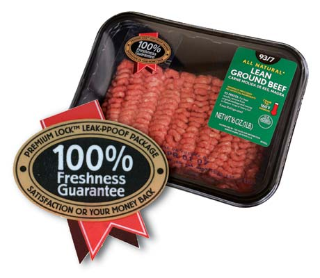
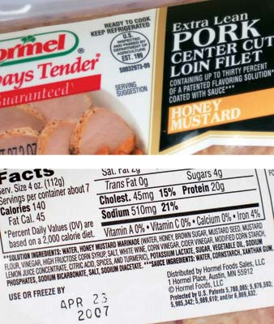

Shocking News About Meat
Buyer beware: 'Fresh' meat may be preserved with carbon monoxide and diluted with salt water.
By Laura Sayre
June/July 2007
Not long ago, most of our fresh meat was handled by butchers in local supermarkets and meat shops. Beef was dry aged in coolers for up to four weeks, which made it more tender and flavorful. Aging also allowed water to evaporate, intensifying the flavor and reducing the meat’s weight by up to 20 percent. But skilled butchers were expensive, and the dry aging process required lots of cooler space. So, dry aging is becoming a thing of the past, and that, as well as other cost-cutting aspects of industrial meat production, have brought about major changes in the way beef, pork and chicken are handled before reaching our kitchens.
Two of the biggest trends reshaping America’s meat supply are gas packaging and brine injection systems. Manufacturers save millions of dollars in lost meat turnover with these technologies, which make meat appear fresh longer and pump “flavor” into factory-farmed meat, in the form of salt water and broth. Companies also save on labor costs, since these “case-ready” meats can go straight from the cold truck to the retail shelf. Consumers are left paying for meat pumped up with saltwater solutions that may be spoiled by its expiration date. Unfortunately, many people are unaware of these new practices. Here’s what you need to know to be a smart shopper.
HISTORY OF CASE-READY MEAT
A few case-ready meats, such as bacon, frozen turkey and packaged cold cuts, have long had a place on the nation’s supermarket shelves. But until recently, most fresh meat was packaged by butchers in the store. Now, Wal-Mart is leading the change, converting to 100 percent case-ready meats in 2001. (Interestingly the company’s decision came just a month after meat cutters in a Jacksonville, Texas, store voted to unionize.) Other discount retailers, such as Aldi and SuperTarget, are close behind, and many other supermarket chains now stock pre-packaged meats. In fact, case-ready meat accounted for 60 percent of fresh meat sold nationwide in 2004, up from 49 percent in 2002.
MEAT INJECTION SYSTEMS
Previously used for specific items such as whole turkeys and pork tenderloins, brine injection now has spread throughout meat selections. Injection systems, also known as pumping, use needles to add solutions of up to 30 percent water, laced with salt and flavorings, to extend shelf life and provide “juiciness and tenderness” to cuts of meat that might otherwise cook up to be tasteless, dry or tough.
This trend has everything to do with the larger transformation of meat production over the past 30 to 40 years. Meat without character or taste comes from livestock developed for rapid growth rather than flavor, fed grain instead of grass, given growth hormones, cooped up indoors, harvested young, and sold without traditional aging. Concerns about bacterial contamination - again exacerbated by industrial production methods - have led the U.S. Department of Agriculture (USDA) to advise thoroughly cooking meats, making it more likely that consumers will overcook their steaks and chops, hence the need for added “moistness.” And today’s pressed-for-time home cooks are less likely to employ the slow-cooking techniques that work best with less-expensive cuts.
GAS-PACKAGED MEAT
Like injection systems, what the industry calls “modified atmospheric packaging” (MAP), has been around for a while, but has only recently come into widespread use. The process involves removing regular air from meat packages and replacing it with specific blends of gases, including carbon monoxide, carbon dioxide, oxygen and nitrogen. The objective is to control and “enhance” the natural color changes that freshly cut meats undergo as they’re exposed to regular air. This is especially true for beef, which under normal conditions changes from dark purplish red, to bright red, to brownish over a period of several days. Market research has taught retailers that customers will almost invariably choose bright red beef over purplish red beef, even though the latter actually is fresher. Today, by manipulating the “air” in the package, manufacturers can preserve the bright red color for weeks or even months, saving money on lost turnover in the meat case.
Meat pumping and gas-packaging technologies evolved hand-in-hand for two reasons: first, the way meat responds to atmospheric packaging can depend on what it has been pumped with; second, flavoring systems are sometimes needed to compensate for the unsavory effects of the gas packaging. High-oxygen packaging systems, for example, “can induce unwanted off-flavors from oxidation of the meat,” according to Kalsec Inc., a natural flavor system manufacturer.
BUYER BEWARE
New York University nutrition professor Marion Nestle calls pumped meat “mushy, not tender, and way too salty. It’s a total consumer rip-off.” Pumped meats may appear less expensive than regular meats, but their value is diluted - literally. Instead of buying pure meat, you’re buying meat diluted with “a solution.”
Worse, these adulterated meats can contain startling amounts of sodium - something most Americans already consume too much of (see “Avoid Salt to Reduce Blood Pressure,” June/July 2007). Sodium phosphate is one of a large number of additives used as binders to try to keep the added water from leaking out. A modest 4-ounce serving of a pumped round steak, for example, has 430 milligrams of sodium, or 19 percent of your recommended daily intake.
Finally, critics point out that saltwater pumping and gas packaging make it more likely that consumers will buy and eat spoiled meat, and almost certain that they’ll be eating old meat without realizing it. Traditionally packaged ground beef has a shelf life of about five days, while modified atmospheric packaging can give ground beef a shelf life of 14 or even 28 days, says Tony Corbo of the Washington D.C.-based Food and Water Watch. In fact, Consumer Reports found in 2006 that three out of 10 gas-packed ground beef samples had spoiled by their use- or freeze-by date. But all of it still looked nice and red.
Advocates of atmospheric packaging say consumers should observe other indications of spoilage, such as foul odors and surface slime, and not be fooled by the permanent pink. Unfortunately, the USDA has declined to require a label for gas-packed meats to alert consumers. Food and Water Watch has been lobbying for a review of the Food and Drug Administration’s approval of low-oxygen systems using carbon monoxide - one of the most recent and powerful types of gas packaging that provides maximum color enhancement and shelf-life extension - but even if successful this wouldn’t necessarily affect other forms, such as the high-oxygen (80 percent oxygen/20 percent carbon dioxide) system favored by Wal-Mart.
If you know what to look for, gas-packed meats are easy to recognize, although you have no way of knowing which gases are inside. The packages are stouter than the old familiar plastic-wrapped Styrofoam assembly, with a sealed clear plastic top that’s often slightly puffed up by the gases trapped inside. Wal-Mart’s “100% Freshness Guarantee” insignia advertising its “Premium Lock™ Leak-Proof Package” is another giveaway (see photo).
Injected meats are also readily identifiable if you’re paying close attention, and in this case there is a USDA labeling requirement. Standards set by the Food Safety and Inspection Service require a statement identifying the total solution quantity and its ingredients. The typeface is small, but it is on the package. Most packaged meats also bear Nutrition Facts labels, which will reveal the additional sodium you’ll be getting through the meat.
If you value high-quality fresh meat, pay close attention to labels, and get to know your local farmers and butchers. To find them in your area, visit Local Harvest or Sustainable Table.
- Laura Sayre wrote “How Do Your Eggs Stack Up?,” about the benefits of eating farm-fresh eggs, in the April/May 2007 issue. She lives in Bucks County, Pa.
What About Case-Ready Organic Meat?
Most organic meat in the supermarket does arrive case-ready, since many retailers aren’t certified organic handlers and don’t want to deal with keeping unwrapped organic meat separate from non organic meat, says Pam Saunders, operations manager for Organic Prairie, the organic meat division of Organic Valley. But organic processing regulations disallow some of the packaging methods used for conventional meat, such as low-oxygen atmospheric packaging that uses small amounts of carbon monoxide. “The concern was that the color could remain so good in the low-oxygen packaging that it could potentially mask spoilage,” Saunders says. While some forms of gas packaging are allowed in organic meat, Organic Prairie chose instead to use vacuum packaging.
Organic regulations don’t prohibit injection, which is standard procedure for processing meats like hams, but the ingredients in the brine are restricted. Binders such as sodium phosphate are prohibited in organic processing, which translates to more meat and less water for people who buy organic processed meats, compared to their conventional counterparts.
 DAVE CHANNON Two of the biggest trends reshaping America's meat supply are gas packaging and brine injection systems. |
 MATTHEW T. STALLBAUMER Meat packed with gases, including carbon monoxide, isn’t labeled as such, but you can spot it through the packaging--it tends to be sturdier, with a clear plastic overwrap that doesn't touch the meat. While this package is labeled “All Natural” and "100% Fresh," the meat has been gas-packed. |
 MATTHEW T. STALLBAUMER This pork tenderloin was injected with “up to 30 percent of a flavoring solution.” In addition to high levels of sodium, the solution also contains many additives and preservatives. |
 MATTHEW T. STALLBAUMER Since beef color is no longer a reliable freshness indicator, buyers need to be aware of other signs of spoilage, such as surface slime and foul odors. |
|
|